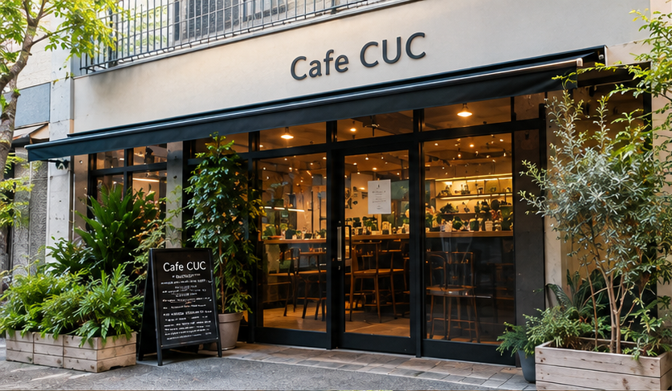
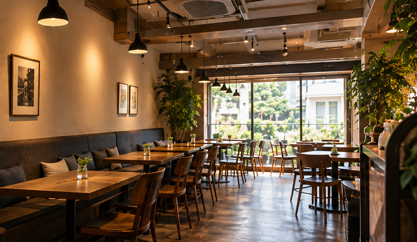
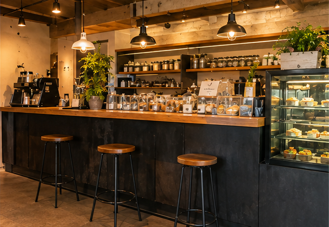
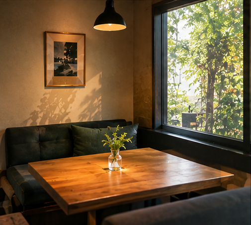
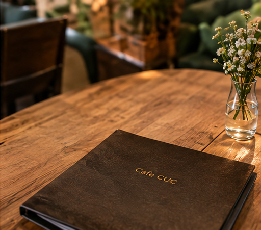
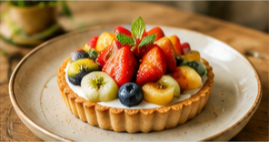

01
一杯ずつ丁寧に淹れるコーヒー
豆の個性を大切にしながら、香りと味わいを引き出します。 いつもの一杯も、少し特別な時間になるように。

OUR CONCEPT
自分のペースに戻れる、街の小さなカフェ。
Cafe CUCは、コーヒーを片手に自分らしい時間を過ごせる場所です。 木の家具や植物に囲まれた落ち着いた空間で、 読書をしたり、お菓子を味わったり、何もせずにひと息ついたり。 それぞれの過ごし方を大切にしています。
Coffee ・ Unwind ・ Comfort
OUR COMMITMENTS
一杯のコーヒーから、居心地のよい空間まで。
01
豆の個性を大切にしながら、香りと味わいを引き出します。 いつもの一杯も、少し特別な時間になるように。
02
小さなキッチンで少しずつ焼き上げる、手作りのお菓子。 コーヒーとの相性も考えて仕上げています。
03
木のテーブルや植物、やわらかな光。 気持ちまでゆっくりとほどけるような空間を目指しました。
04
朝食からランチ、午後のおやつまで。 日々の暮らしの中で気軽に楽しめるメニューを揃えています。
05
カウンター席やひとり用の席もご用意。 読書や短時間のパソコン作業にもご利用いただけます。
INSIDE CUC
木の温もりと植物に囲まれた、穏やかなひととき。





SEASONAL RECOMMENDATION
季節の素材を使ったドリンクやお菓子をご用意しています。 その時期ならではの味わいを、ゆっくりお楽しみください。
季節のメニューを見るSHOP INFORMATION